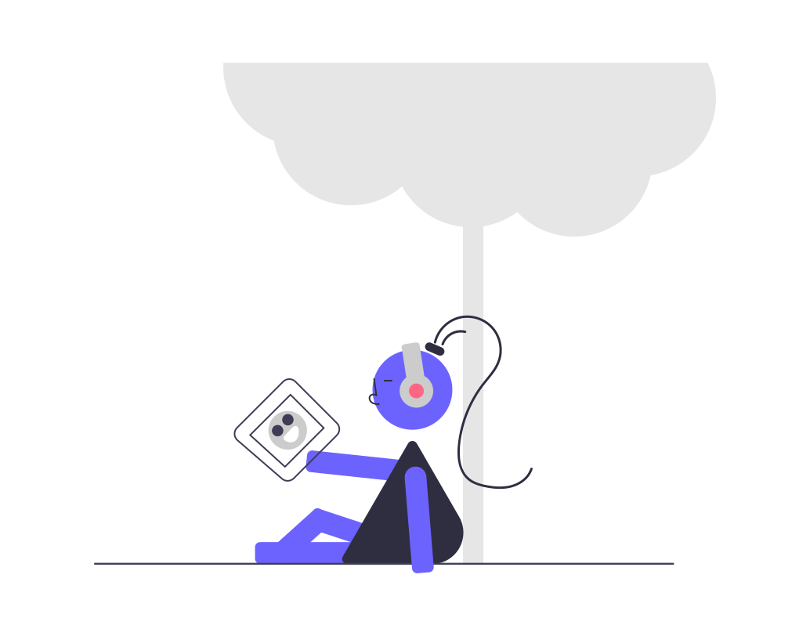

1. Aprendizaje basado en juego
El juego permite aceptar y aprender de nuestros errores. Es una manera entretenida y motivadora para aprender. Ayuda a desarrollar habilidades cognitivas, motora y sociales.

2. Metodo Reggio Emilia
Se centra en el aprendizaje a traves de la exploración artistica, el pensamiento critico y el trabajo en equipo. Los niños expresan su aprendizaje a traves de multiples lenguajes con los que interaccionan y se comunican con sus iguales.
3. Aprendizaje autodirigido
Fomenta que los niños tomen la iniciativa en su propio aprendizaje, eligiendo los temas que les interesan y como desean aprenderlos.
4. Juegos dinamicos
Ayuda de manera divertida para fomenar la imaginación y ser creativo. Ayuda a tomar desiciones, para desarrollar su capacidad mental y la adquisición de conocimientos.
5. Sistema de recompensa
Los niños al completar cada unidad, nivel y etapas de aprendizaje, desboquearan accesorios para personalizar su Incluus. Para incentivar a seguir avanzando en su siguiente nivel.